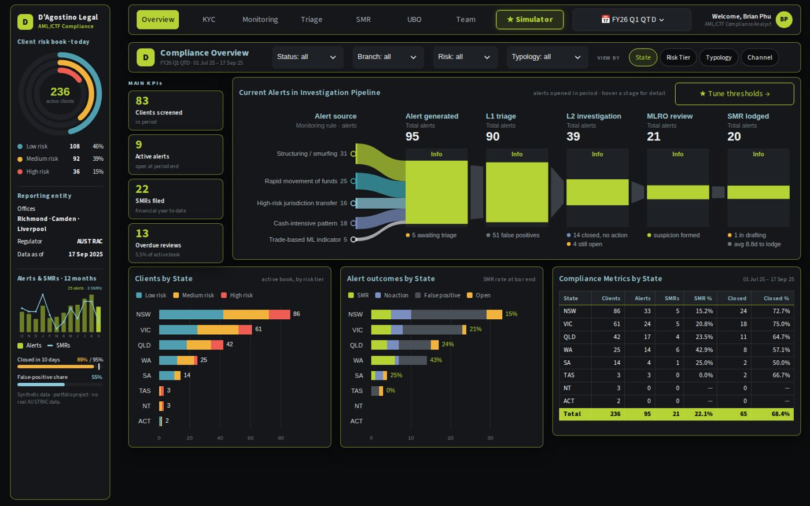
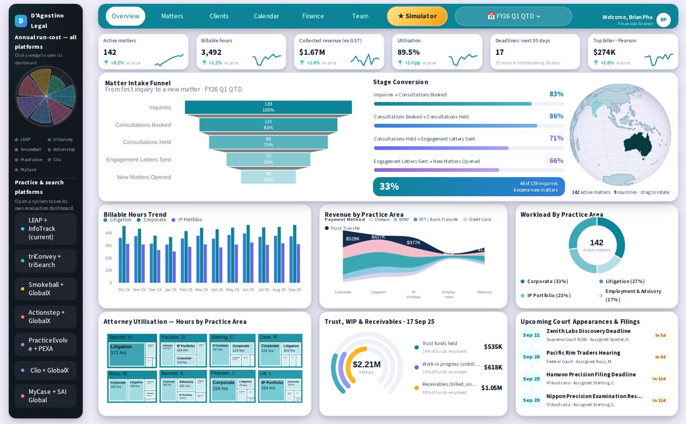
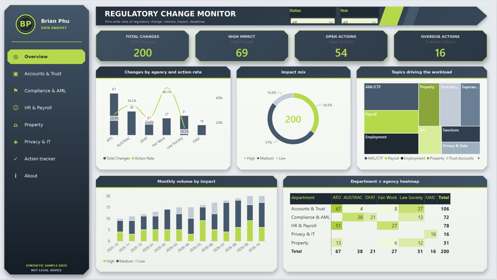
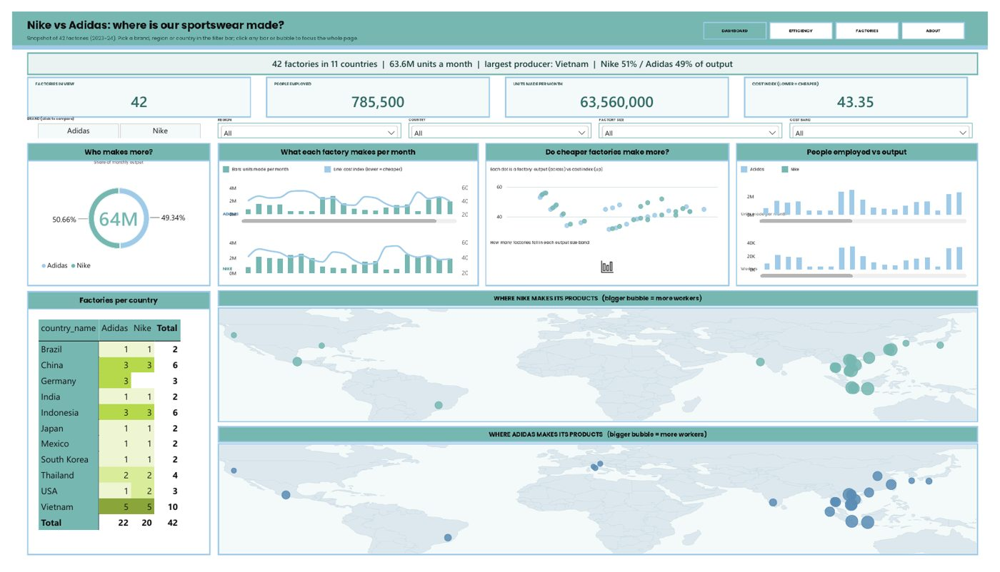
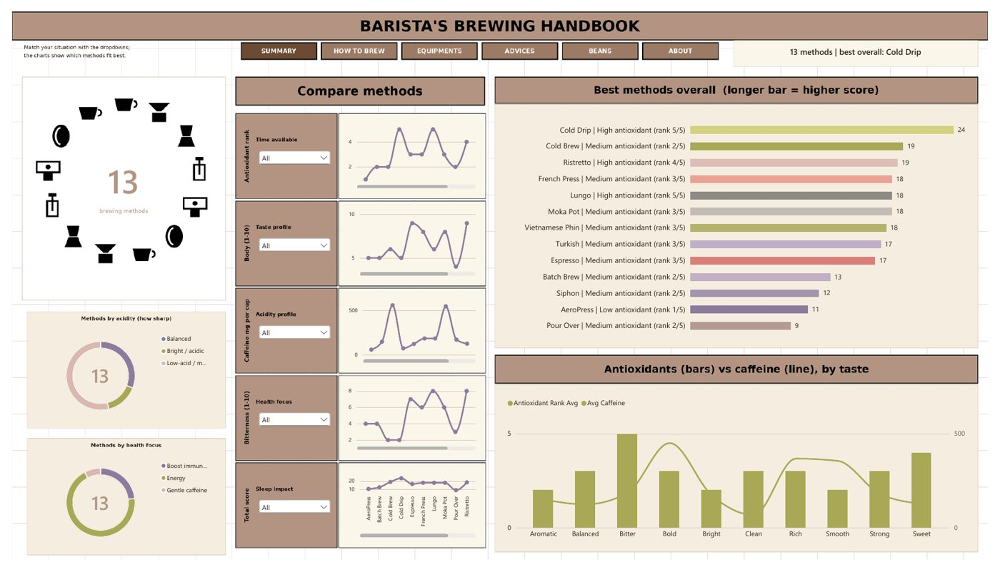
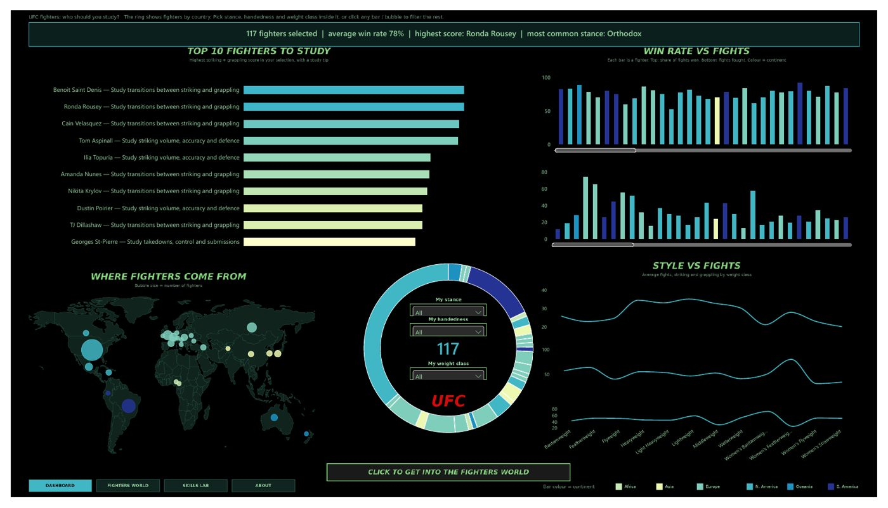

I build data projects end to end: collect and clean the data, model it, test it, and present it so a manager with no technical background can act on it. Based in Sydney, working towards Data Analyst, Data Engineer and AML/compliance roles.
Each repo has tests and CI. Where a project scrapes the web, the proof file is written by a GitHub Actions run, not by hand.

Australia's new AML duty for law firms, built as a working tool: 236 clients risk-rated, 95 alerts triaged, UN sanctions screened live.
Client risk rating, transaction monitoring, alert triage and SMR drafts for an Australian law firm. Includes a polite scraper (robots.txt, rate limit, identifying User-Agent) of the UN Security Council sanctions list with name screening.

Revenue is up but profit is behind budget. The simulator shows which lever closes the gap.
Financial operations dashboard for a law firm: profit versus budget, with a decision simulator and goal-seek to test what it takes to hit a target.

200 regulatory changes sorted by impact and urgency: 69 high impact, 16 already overdue.
Classifies regulatory change items by impact and urgency so a compliance team can triage them. Rule-based classifier with unit tests, data dictionary and CI.

Vietnam and Indonesia hold about 40% of the factories, so one shock can hit both brands at once.
Factory-level competitive analysis: 42 factories in 11 countries, with an HHI concentration index to measure production risk. Tableau and Power BI dashboards.

Bright coffees are thin and heavy coffees are flat: acidity and body correlate at -0.71.
Brewing-method data project and bean consultant app, with scrapers for public sources.

Right-handed southpaws win more (74.3% vs 70.2%), but at p = 0.07 it is not proven.
Scraper design, cleaning, hypothesis tests (chi-square) and a KNN fighter recommender across 117 fighters, with Tableau and Power BI dashboards.
The same three analyses built in Tableau and in Power BI. The Power BI versions are written for readers with no technical background: every page states the question, the answer and how to read it.
Each one is used in at least one repo above.
PostgreSQLSQL · data modelling · source-to-target mapping
pandas · NumPy · SciPycleaning · hypothesis tests · KNN
Polite web scrapingrobots.txt · rate limits · retries · caching · offline tests
Tableau · Power BIdashboards for non-technical readers
Streamlit · Plotlydecision tools and screening apps
pytest · GitHub Actionstests and CI on every repo
AML/CTF conceptsrisk rating · monitoring · sanctions screening · SMR
OODA · HHIdecision framing and concentration risk
I work as a legal bookkeeper and data migration assistant at a law firm in Sydney, and I am completing a Bachelor of IT. Day to day I handle payroll, superannuation records, commission calculations across branches and property settlement statements, so I know what accurate financial data looks like and how costly mistakes are.
The portfolio is my way of turning that into analytics and engineering work: clean pipelines, tested code and dashboards a manager can read in a minute.
Outside work: espresso, Muay Thai and supply chains.
Open to Data Analyst, Data Engineer and compliance analyst roles in Australia.